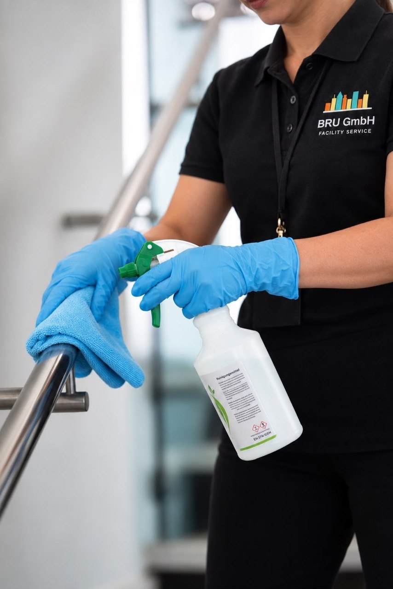
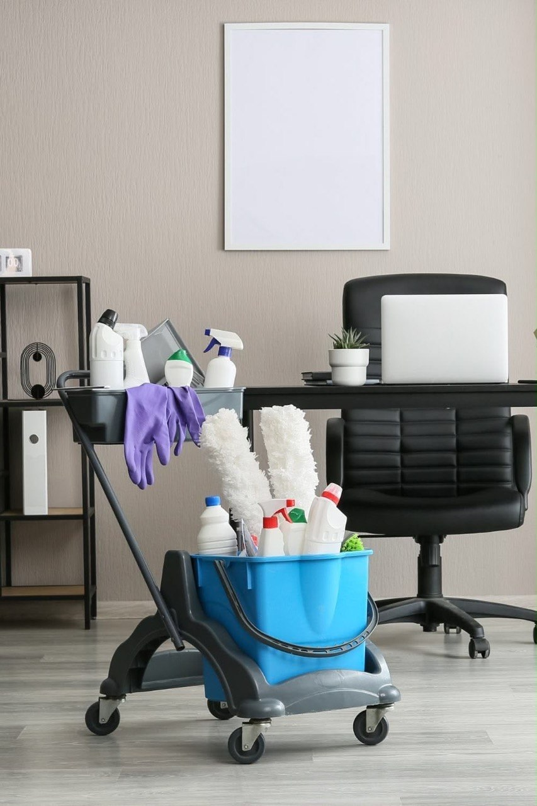
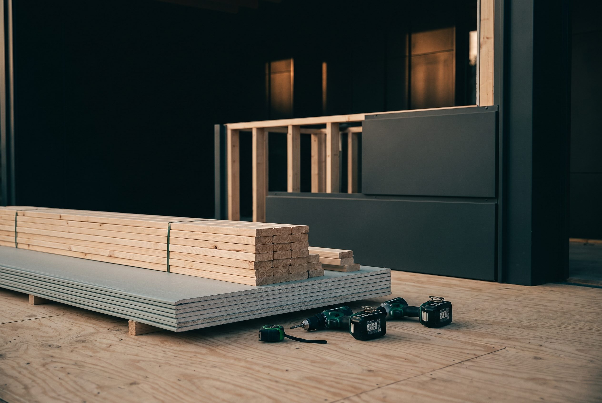

Facility Service · Frankfurt am Main
Innen gepflegt.
Außen gepflegt.
Rundum betreut.
Ein Partner für Gebäude, Außenanlagen und alles dazwischen — seit über zehn Jahren, mit zertifiziertem Fachpersonal und festem Ansprechpartner.
Wer wir sind
BRU steht für Bau, Reinigung, Umfeldbetreuung — drei Bereiche, ein Team. Seit über zehn Jahren betreuen wir Privathaushalte und Gewerbeobjekte in Frankfurt und der Region mit zertifiziertem Fachpersonal, kurzen Wegen und einem festen Ansprechpartner. Bei Großobjekten im Gewerbe sind wir auch deutschlandweit im Einsatz.
bereiche


Leistungen
Fünf Bereiche.
Ein Anruf.


24h-Notdienst
Wenn es schnell
gehen muss.
Rohrbruch, Sturmschaden oder akuter Räumbedarf: In dringenden Fällen sind wir rund um die Uhr erreichbar — für Bestandskunden ebenso wie für neue Anfragen mit unmittelbarem Handlungsbedarf.
Wie wir arbeiten
Von der Anfrage
bis zur Umsetzung.
Kontaktaufnahme
Sie schildern uns Ihr Anliegen — telefonisch, per WhatsApp, E-Mail oder über unser Formular. Wir melden uns kurzfristig zurück.
Analyse & Angebot
Wir verschaffen uns vor Ort oder im persönlichen Gespräch ein genaues Bild und erstellen ein maßgeschneidertes, transparentes Angebot.
Umsetzung
Ihr fester Ansprechpartner begleitet die Umsetzung von Anfang bis Ende — zuverlässig, termintreu und mit kurzen Wegen.
Einblicke
Arbeiten aus der Praxis
Kundenstimmen
Was unsere Kunden sagen.
Ein fester Ansprechpartner, zertifiziertes Fachpersonal und über zehn Jahre Erfahrung — für Privatkunden ebenso wie für Hausverwaltungen und Gewerbe-Großobjekte, regional und deutschlandweit.
Warum BRU GmbH
Vier Gründe für eine
langfristige Zusammenarbeit.
Ein Partner, fünf Bereiche
Bau, Reinigung, Garten, Winterdienst und Hausmeisterservice aus einer Hand — ohne Reibungsverluste zwischen mehreren Dienstleistern.
Fester Ansprechpartner
Sie sprechen immer mit derselben Person — kein Callcenter, kein ständiger Wechsel, sondern jemand, der Ihr Objekt kennt.
Zertifiziertes Fachpersonal
Kontinuierliche Weiterbildung und über zehn Jahre Erfahrung stehen für eine Qualität, die sich auch im Detail zeigt.
24h-Notdienst
Für dringende Fälle sind wir rund um die Uhr erreichbar — ein Versprechen, das nur wenige Anbieter in dieser Form halten.
Häufige Fragen
Gut zu wissen.
Welches Gebiet deckt ihr ab?
Unser Kerngebiet ist Frankfurt am Main und die Rhein-Main-Region. Bei größeren Gewerbeobjekten sind wir auf Anfrage auch deutschlandweit im Einsatz.
Gibt es feste Verträge/Abos (z. B. Winterdienst, Gartenpflege)?
Ja. Für Winterdienst und Gartenpflege bieten wir Saisonverträge und regelmäßige Pflegeabos an — abgestimmt auf Ihr Objekt und mit klar geregelten Leistungszeiten.
Wie schnell seid ihr im Notfall vor Ort?
Bei dringenden Fällen wie Sturmschäden, akutem Räumbedarf oder Notfällen im Hausmeisterservice reagieren wir kurzfristig — unser 24h-Notdienst ist rund um die Uhr erreichbar.
Arbeitet ihr auch für Privathaushalte?
Ja, ausdrücklich. Privathaushalte und Gewerbekunden sind uns gleichermaßen wichtig — vom einzelnen Fensterputz bis zur Betreuung ganzer Liegenschaften.
Wie läuft eine Anfrage ab?
Sie kontaktieren uns telefonisch, per WhatsApp, E-Mail oder Formular. Wir verschaffen uns kurzfristig ein genaues Bild Ihres Anliegens und erstellen ein transparentes, maßgeschneidertes Angebot.
Kontakt
Sprechen wir
über Ihr Projekt.
Rufen Sie an, schreiben Sie uns oder stellen Sie Ihre Anfrage über unser ausführliches Formular mit Leistungsauswahl und Datei-Upload — Ihr fester Ansprechpartner meldet sich kurzfristig zurück.